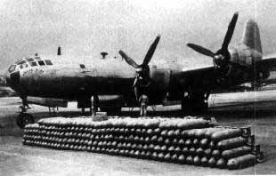
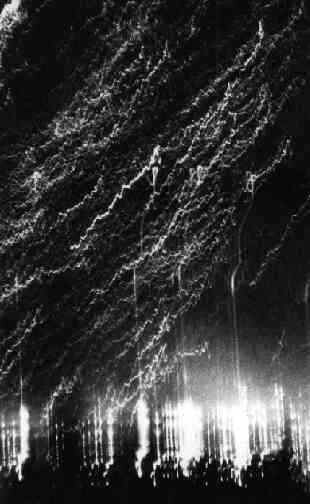
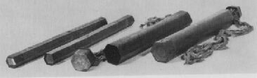

１．呉空襲の特色と米軍の日本空襲
米軍の日本空襲
(1)本土初空襲
1942年(昭和17)4月18日、米空母ホーネットから発進したB25爆撃機16機が、東京をはじ轟め名古屋、神戸など主要都市を爆撃し、中国大陸に脱出した。本土初空襲である。死者45人、重軽傷者135人、全半焼家屋289戸の被害であった。
ドーリットル中佐を指揮官とするこの奇襲は日本軍部をあわてさせた。
本土空襲を防ぐため日本海軍連合艦隊は6月、ミッドウェー作戦を強行したが、作戦を誤り、大敗した。
これを期に、日本軍優位の戦局は逆転し、その後は敗戦への道をたどることになる。
(2)成都からの空襲
アメリカ軍は長距離爆撃機の開発を急ぎ、B29(超空そらの要塞=スーパーフォートレス)爆撃機が完成した。しだいに量産されてきたB29の基地が中国の成都におかれ、1944年(昭和19)6月16日、同基地から63機が発進し、北九州の5都市を空襲し、死者216人、重軽傷者376人、全半焼家屋318戸以上の被害を出した。
成都から九州への空襲は10回にわたって行なわれ、のべ363機のB29が九州の主要都市を襲い、377人以上の犠牲を負わせた。
(3)マリアナ基地からの空襲

B29と爆弾
・マリアナ基地の増強
サイパン島の日本軍が全滅したのは1944年(昭和19)7月7日であるが、アメリカ軍は戦闘中からすでに飛行場の拡張工事を始めていた。そして1944年11月24日には早くも100機以上のB29が集結し、マリアナ基地からの第1回東京空襲が行なわれた。アメリカ軍はB29部隊の増強をすすめ、1945年2月初旬にはサイパン･テニアン･グアムといったマリアナ諸島の各基地から500機以上のB29が日本本土を空襲できる態勢となっていた。
・軍事施設への高高度精密爆撃
マリアナ基地のB29部隊を統括していたアメリカ陸軍第21爆撃機軍団の司令官は、ヘイウッド･S･ハンセル准将であった。ハンセル准将は高高度精密爆撃(1万メートルの上空から軍事施設のみをねらう爆撃)を主張し、1944年11月24日から1945年(昭和20)1月19日までの間それをこうてつ実行したが、車上層部が期待した効果はあがらず、司令官を更迭された。
・都市への夜間無差別焼夷弾爆撃

焼夷弾が落ちてくるようす。火の雨に見えた。
後任の司令官には、カーチス･E･ルメイ少将が任命された。ルメイ少将はヨーロッパ戦線で、ドイツ諸都市への絨椴じゅうたん爆撃戦術を編み出した軍人であった。ルメイ少将は高高度精密爆撃をしばらくは行なったが、夜には日本側の抵抗が弱いことを見抜き、大都市を約1500メートルの低高度から夜間に焼夷弾で無差別攻撃することを立案した。一般住民が住んでいる都市地域そのものが攻撃目標にされたのはこのころからである。
1945年3月10日の夜、東京大空襲が行なわれたのを始まりとして、名古屋、大阪、神戸と、大都市が次々に焼き払われた。ほとんどが焼け野原と化した大都市は、B29部隊の目標リストからはずされ、攻撃目標は中小都市へと移った。
中小都市へ攻撃は1945年6月17日から始まり、敗戦当日の8月15日までに57の中小都市に対して16回の攻撃が行なわれている(1回の攻撃で平均4都市が襲われた)。呉市街地空襲は、そのうちの一つである。
このような、非戦闘員に対する無差別攻撃は、日本軍が中国の諸都市に行なっていた。
1940年(昭和15)5月-9月、日本海軍の陸上攻撃機は、当時の中華民国の首都･重慶に対してのべ182回の無差別爆撃を行ない、多数の住民を殺傷した。
アメリカ大統領ルーズベルトはこれをみて、日本に対する報復爆撃の検討を命じたといわれる。
1945年3月17日に硫黄島が占領された後は、ロッキードP51戦闘機(ムスタング)がB29の護衛をしながら来襲するようになった。日本側にはP51に太刀打ちできる戦闘機はなく、アメリカ軍の日本空襲作戦はほとんど一方的に進められたのである。
爆弾と焼夷弾
(1)爆弾について
呉地域に投下された爆弾は、「B29爆撃機によって投下されたもの」と、「艦載機によって投下されたもの」に大別される。このうち、爆弾が「B29によって投下された」のは、5月5日の広海軍工廠･第11海軍航空廠への空襲と、6月22日の呉海軍工廠への空襲であった。これら、軍需工場に対する空襲に使用されたのは、以下の三種類の爆弾である。

2000ポンド通常爆弾AN-M66(日本側の通称:1トン爆弾)
1000ポンド通常爆弾AN-M65( 〃 :500キロ爆弾)
500ポンド通常爆弾AN-M66( 〃 :250キロ爆弾)
(2)焼夷弾について

焼夷弾
焼夷弾は、B29部隊の日本都市に対する空襲で多用された。呉においては、7月1-2日の夜間無差別市街地大空襲で、雨のように投下された。呉に投下された焼夷弾は二種類であった。
●50キロ(100ポンド)膠化ガソリン焼夷爆弾AN-M47A2
B29部隊が都市地域を爆撃するときに、ほとんどといってよいほど、先 導機がこの焼夷爆弾を携行し、投下した。6発づつ集束されており、地上 に爆発と火災による混乱を引きおこすのが目的であった。
●250キロ(500ポンド)集束焼夷弾E46
これは、M69焼夷弾を48発内臓している集束焼夷弾である。M69(6ポンド=2.7キロ)焼夷弾は、燃えやすい家屋が密集した。日本本土の都市攻撃用として、アメリカ軍が1942年に開発したものである。
細長い六角形の金属筒で直径8センチ、長さ50センチ。ナパーム剤というゼリー状油脂を充填し、弾尾には麻布製の長いリボンがついていた。
空中で、E46が48発のM69に分解するときにそのリボンに火がつくので、空中に火の雨が降るように見えた。
空襲を体験した人にとっては、もっともなじみ深い焼夷弾であった。
日本全体の空襲被害
1.来襲米軍機（Ｂ29、および艦載機）
400回以上 66.000機 投下爆弾 16万トン
2.被災都市 約150都市町村 うち72市町村は軍事施設の無い市町村
3.被害状況 死者 31万人、不明者 2万4千人、負傷者 35万1千人、
全焼家屋 231万戸、軍需工場 600ヶ所大破、
罹災者 2100万人、疎開人口 850万人、
4.学徒勤労動員 総計 343万人
小学生 163万人、中学生 160万人、大学など 19万人
トップページに戻る